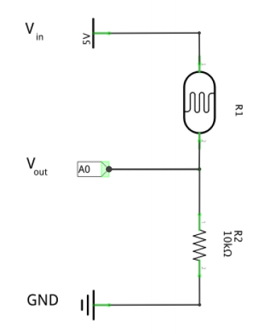

ASSIGNMENTS
Making one LED pin blink twice as fast as the other one (3C)
This assignment was to make two LEDs blink, but to make one blink twice as fast as the other one. This was very easy to achieve as the manual already showed how to make two LEDs blink at the same time, all you have to do is set the delay for one LED to half of what the other one’s is. I put one delay to 500 and the other to 250. It was confusing as to why I had to move the pins on the Arduino board, but I did it anyway. I was also confused as to why the green LED seemed to have less voltage than the yellow one, but seems like the green one just doesn’t light up as much. I changed the wires, pin locations, resistors and LEDs and it was still the same.
Making one LED pin fade out when the other fades in (4C)
The next one exercises covered fading LEDs in and out using for loops, which is something familiar to me from processing. This seemed all very logical, although I did change the code from the manual a bit, I renamed the integer from brightness to i, as it’s shorter and thus it makes it easier to play around with. I had to make one LED pin fade in while the other one faded out. It seemed to be out of sync because the green one was less bright than the yellow one, but it was actually working.
Controlling the LEDs with a potmeter (6C)
This was a tricky one to get working. The function of the potmeter in this case is to use this to make the LEDs fade in and out. To make them work in a way so that one fades in while the other one fades out requires some logic. The potmeter provides input I can use a value for brightness for the LEDs, which is output. To make them work in a reverse order, I have to put the brightness value from the sensor as a negative value. This is pretty easy, but it’s hard to control it with the potmeter, as you can scroll through the potmeter and the value of 255 fits in to 1023 (the max of the potmeter) many times, you can’t really stop at the right spot where one LED is on and the other is off, so it made this difficult to film.
Controlling the LEDs with a light sensor (7)
The light sensors allow you to control the LED pins. Just like controlling them with the potmeter, you can see the input value from the light sensor in the serial monitor. The higher the input value, the lighter the pins light up. Although to make this work you have to convert the the input in the serial monitor to the range of 0 to 255, just like the last one. Doing that alone doesn’t do the trick, because this just makes the lights flicker so you also have to constrain the value from 0 to 255, which you can do easily with the map() and constrain() functions.
Two light sensors with LEDs (8)
As can be seen in the video, the circuit here is very similar to the one in the previous exercise. Instead of a resistor with the default resistance of 10 000Ω, I am using a light sensor as a resistor, which means that the resistance is dependant on the amount of light. The darker it is, the higher the resistance => the lights turn off. The lighter it is, the lower the resistance => the lights turn on. Essentially, the lower the resistance, the more power goes through the circuit and can reach the LED lights. The input power is 5V and the output is calculated with this formula using resistor values.
Arduino + Processing (9B)
This was actually a very simple assignment, as the code was already given in the complete form and the only thing I had to do was to find the right port in which my arduino was connected to my computer, because the code to arduino is already uploaded, you can plug it into any power source and it will still run the same code that was uploaded to it. Even though the only thing I needed to do was to find the right port, it still took me a long time, because two ports were working, but neither of them correctly. I thought it was something I did, but after restarting my computer, it worked out fine.
Controlling LEDs with two buttons (10F)
This exercise was about connecting two buttons to the arduino board and have them work in the following way: if either one is pressed, then the light turns on, but if both are pressed, then the light does not turn on. This is actually also a pretty simple exercise, because you basically just need to create three different if statements: 1) the first button is pressed while the second one is not 2) the second button is pressed but the first one is not 3)both are pressed. Additionally, one else statements that covers every other possible situation. If I had just made three if statements about either one of the buttons being pressed and one if statement about both being pressed, it would not have been enough.
Servomotor (11B)
jThis was the first assignment where we got a little creative freedom. Since there is very limited movement with a servomotor (it just rotates) I started thinking about what is something that the servomotor could do that is a little bit cute. I decided it should wave and that was very easy to achieve - just make the speed higher and the position range smaller, so it would look like it was waving at me :)
Controlling the servomotor with buttons (12B)
This was also a pretty easy one to figure out since the last one was about servomotors and the one before that about 2 buttons. You just need to set a different direction for each button pressed and it’s done. Although you can alter your code more and make it better, so that if you hold down one button it doesn’t keep moving forward and therefore looking like its having a stroke, but I couldn’t figure out how that works, so in my example, the code works perfectly fine if you just press each of the buttons once.
Piezo speaker (13B)
This was a really satisfying one, because I enjoy making music and playing around with this kinda stuff, although it is really hard to get a full melody going by writing code like this. I wanted to make it do the super mario theme, but realised it would be too difficult as every example I looked up online had very very long arrays full of notes and chords for this. So I just made a very simple random melody that goes low and then high again.